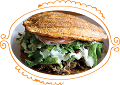
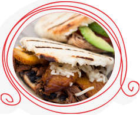

Homemade Venezuelan Food
Our Menu is 99% Gluten and Nut FREE
Tostones
[tos-tones´]
Fried green plantain drizzled with cheddar cheese served with chopped tomatoes, home made chili sauce and home made creamy mayo sauce.
Vegetarian
Patacón
[pah-tah-cone´]
Delicious crispy green plantain sandwich. Delicious savoury dish, made with green plantains filled with your choice of shredded chicken or slow cooked pulled beef, cheddar cheese, chopped cabbage and sliced avocado.
Vegetarian option available
Empanadas
[em-pah-na-das]
Beef
Fried crunchy cornmeal empanada filled with tender, lean minced beef with finely chopped green, red and yellow peppers, onions and garlic, served with home made creamy mayo sauce.
Cheese and Potato
Fried crunchy cornmeal empanada filled with local cheddar cheese and chunky potato served with home made creamy mayo sauce.
Vegetarian
Bollos Pelones
[bol´-lyos] [pay-lo-nays´]
Corn dough balls stuffed with lean minced beef cooked with ripe freshly chopped peppers, onions and garlic served in a tomato based sofrito.
Arepas
[a-re-pah´]
Cornmeal patty stuffed with your choice of meat, cheese, black beans and plantain, served with home made mayo and chilli sauce.
Vegetarian option available
Desserts
Quesillo
[Kay-seel´-lyo]
Exquisite Venezuelan flan, made with free range eggs, condensed milk, rum,caramel and milk.
Pineapple Cake
Succulent sponge covered in pineapple caramel decorated with pineapple slices and cherries.
Tres Leches
[trays] [lay´-chays]
Sponge cake soaked in three kinds of milk: evaporated milk, condensed milk, and double cream, topped with meringue.
We cater!
07414 986478
From casual parties to corporate luncheons, Toston Tolon is perfect for catering your next event.
Treat you and your guests to a delicious selections of Venezuelan favorites including but not limited to:
EMPANADAS - TOSTONES AREPAS - PABELLÓN PATACÓN - BOLLOS PELONES
Our staff will deliver your order (£50 minimum) for a flat fee at select locations. We include table cloths, plates, napkins, eating and serving utensils and condiments.